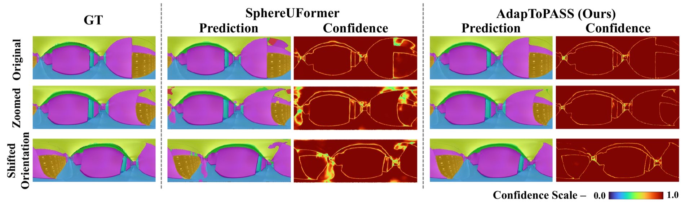
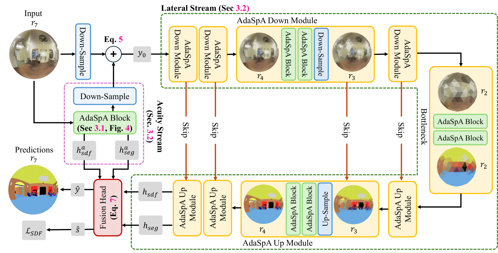
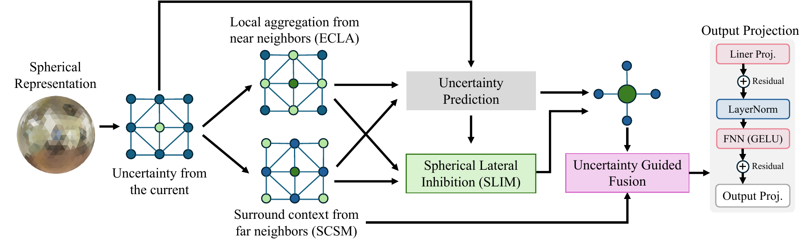

TL;DR A bio-inspired spherical transformer that adapts to contextual and geometric ambiguity for robust panoramic segmentation under unseen transformations.
Spherical perception in current methods degrades under spherical transformations because of geometric and contextual ambiguity, while biological vision remains stable through adaptive perception.
Abstract
Spherical Transformers have emerged as a framework for panoramic semantic segmentation (PASS), but often assume canonical spherical structure and stable viewpoints. Real 360° cameras move freely, introducing contextual and geometric ambiguity that limits robustness to unseen spherical transformations. We present a systematic analysis of existing PASS architectures under these transformations and introduce AdapToPASS, a bio-inspired Spherical Transformer that adapts to both forms of ambiguity. Adaptive Spherical Attention (AdaSpA) modulates attention according to local contextual ambiguity; Bifocal Spherical Representation balances high-resolution acuity with broad contextual coverage; and signed distance field boundary supervision improves localization. On indoor and outdoor benchmarks, AdapToPASS outperforms prior methods and achieves relative mIoU improvements of 13.38% on Stanford2D3D and 18.77% on WildPASS under unseen transformations. Its lightweight variant, AdapToPASS-Swift, has fewer than 2M parameters and retains strong performance.
Motivation
Core Question
How can ambiguity-aware perception in human vision be integrated into Spherical Transformers to achieve robust panoramic semantic segmentation under unseen transformations?

Qualitative comparison of AdapToPASS and SphereUFormer on Stanford2D3D under unseen spherical transformations. Confidence is visualized with the maximum softmax probability; AdapToPASS maintains higher confidence and sharper semantic boundaries.
Panoramic segmentation models are commonly designed around a canonical spherical structure. In practice, arbitrary rotations, scale changes, and viewpoint shifts introduce contextual ambiguity and geometric ambiguity. Biological vision remains robust by adapting contextual integration under uncertainty, balancing fine detail with broad field of view, and preserving sensitivity to boundaries. AdapToPASS brings these principles to spherical perception.
Overview
Framework Summary
Given an omnidirectional RGB image, AdapToPASS projects it onto an icosphere and predicts dense semantic labels together with signed distance fields. The model minimizes semantic, contextual, and geometric ambiguity through adaptive spherical attention, bifocal representation, and boundary supervision.
Component 01
Adaptive Spherical Attention (AdaSpA)
AdaSpA dynamically modulates contextual integration using a learned local ambiguity signal and geodesic bias. Ambiguous regions can aggregate broader context, while reliable regions preserve sharper local evidence.
Component 02
Bifocal Spherical Representation
The Acuity Stream preserves fine full-resolution geometry and boundaries. The Lateral Stream captures broad semantic context at a coarser spherical resolution, then fuses both streams for dense prediction.
AdapToPASS Pipeline

Overview of the AdapToPASS framework.
The spherical image is processed by the parallel Acuity and Lateral streams. AdaSpA blocks adapt their receptive context according to ambiguity, while spherical signed distance field supervision sharpens semantic boundaries.
Results
Interactive benchmark analysis
Explore the paper’s full benchmark table by dataset and metric. The highlighted row is AdapToPASS; bars use a shared 0–100 scale so the gaps remain easy to read.
Dataset
Metric
Table 1 · SOTA comparison
Canonical panoramic benchmarks
Higher is better
Method
Params
mIoU
Rank
Read the gap
mIoU on Stanford2D3D
0—100
Table 3 · Component study
What each component adds
Stanford2D3D
Configuration
mIoU
Confidence
Δ mIoU
AdapToPASS
70.80
96.42
—
Without context ambiguity
64.97
88.47
−5.83
Without acuity stream
66.50
92.20
−4.30
Without boundary supervision
63.70
91.90
−7.10
The largest mIoU drop comes from removing boundary supervision, while contextual ambiguity has the biggest confidence impact.
Table 2 · Unseen transformations
Robustness on Stanford2D3D
mIoU
Method
Mild
Robust
Stress
Averages across the transformation families reported in the paper. AdapToPASS leads every severity level.
AdapToPASS-Swift
Lightweight Variant
AdapToPASS-Swift preserves ambiguity-aware spherical perception with fewer than 2M parameters. Its Adaptive Spherical Context Aggregation (AdaSpX) module replaces attention with lightweight geometry-conditioned local and surround aggregation for efficient deployment.

Overview of the AdaSpX module. AdaSpX replaces the AdaSpA blocks in AdapToPASS for efficient spherical semantic segmentation.
Compact model comparison
Stanford2D3D test set
mIoU
Model
Params
mIoU
HexRUNet
1.99M
44.55
SphereUFormer
2.04M
55.10
Trans4PASS
1.99M
54.50
AdapToPASS-Swift
1.99M
57.85
Contributions
01
We present a systematic analysis of panoramic segmentation architectures under unseen spherical transformations, revealing contextual and geometric ambiguity as key failure sources.
02
We propose AdaSpA, which adapts spherical attention to local contextual ambiguity and geodesic structure.
03
We introduce Bifocal Spherical Representation with Acuity and Lateral Streams, together with boundary supervision for sharper predictions.
04
We demonstrate robust gains on Stanford2D3D and WildPASS, and provide a compact AdapToPASS-Swift variant for resource-constrained perception.
Citation
@article{debnath2026adaptopass,
title={AdapToPASS: Ambiguity-aware Adaptive Spherical Transformer for Panoramic Semantic Segmentation},
author={Debnath, Soumyaratna and Zhang, Weiming and Damodaran, Shriram and Xiao, Dingwen and Wang, Addison Lin},
journal={arXiv preprint arXiv:2608.29081},
year={2026}
}